Kosaku Nagasaka
 and Tateaki Sasaki
and Tateaki Sasaki

 Doctoral Program of Mathematics
Doctoral Program of Mathematics
 Institute of Mathematics
Institute of Mathematics
Univiversity of Tsukuba
Tsukuba-shi, Ibaraki 305-8571, Japan
{nagasaka,sasaki}@math.tsukuba.ac.jp
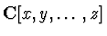
, we determine polynomials G,H and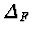
in satisfying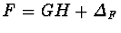
,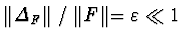
, where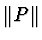
denotes a suitably defined norm of polynomial P. For approximate factorization, we need a completely different algorithm from those for exact factorization. In 1991, Sasaki et al. presented an algorithm of approximate factorization. The algorithm determines irreducible factors by handling the combinations of roots of the form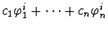
,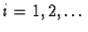
, where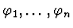
are the power-series roots of a given polynomial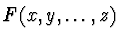
and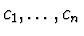
are numbers. The algorithm was analyzed by Sasaki et al. in 1992, but it was incomplete in that the truncation degree of power-series roots was not shown. In this paper, we give a sufficient condition to truncate the power-series, improve the algorithm in several points, and show that the algorithm works in polynomial-time w.r.t.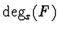
and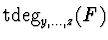
.